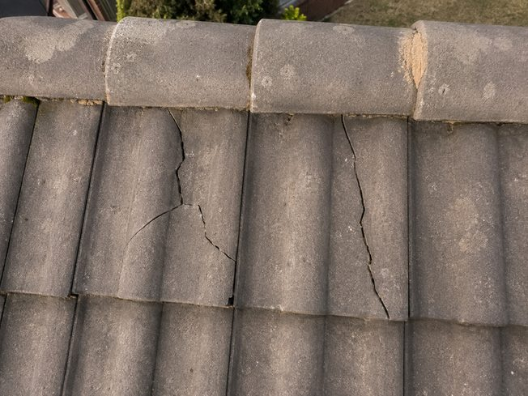
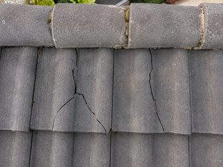
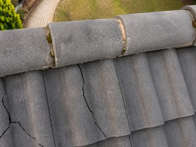
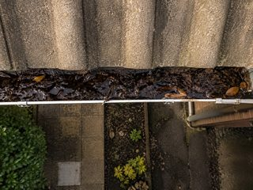

Report ready
Roof inspection · Osokorky, 14 · completed 15:42.
Cover ▸ hero shot (RJ-C4)

Findings ▸ what was found · severity
-
Roof · north slope 2 cracked tiles near the ridge — water ingress risk. -
Gutter · east run Leaf blockage over ~1.5 m, standing water. -
Chimney flashing Sealed and intact — no action needed.
Photo set ▸ evidence frames



Signature ▸ who verified it
OperatorAndriy M.
CertificateUA-DRN-04812
Signed2 Jul, 15:42 · Verified by DRON